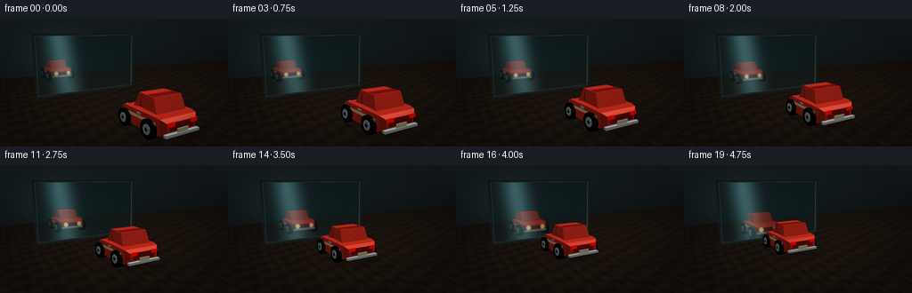
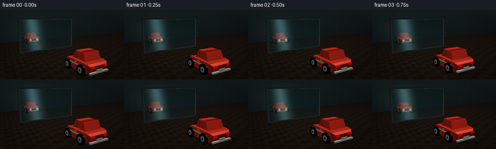
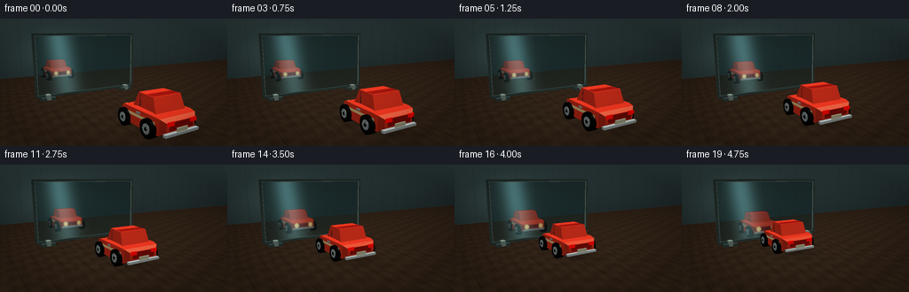
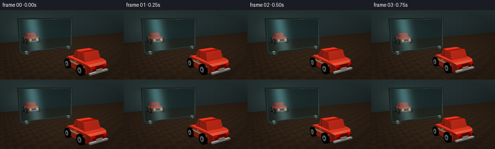

CODING AGENTS AS PIXEL WORLD MODELS
traex/DeepSeek-V4.1-Flash · phygen_063
点击播放 · 原生 RGB 像素
此结果可播放，但该运行尚未通过最终提交审核。页面展示不代表评测通过。
逐轮保存的候选
回放视频、检查图与代码变化。
每份候选均可单独播放。实际图片检查记录在下方工具轨迹中。
候选 01播放与检查图
点击播放 · 原生 RGB 像素


展开代码变化
--- 上一保存版本
+++ 本次保存版本
@@ -0,0 +1,497 @@
+"""Procedural RGB video: a toy car approaches a standing glass panel."""
+
+from pathlib import Path
+
+import numpy as np
+from PIL import Image, ImageDraw, ImageFilter
+
+from artifact_io import save
+
+
+CASE_DIR = Path(__file__).resolve().parent
+WIDTH, HEIGHT, FRAME_COUNT, FPS = 256, 144, 20, 4.0
+SUPERSAMPLE = 3
+W, H = WIDTH * SUPERSAMPLE, HEIGHT * SUPERSAMPLE
+
+GLASS_Z = 2.55
+CAR_START_Z = -1.65
+CAR_END_Z = 1.20
+
+
+def unit(vector):
+ vector = np.asarray(vector, dtype=np.float64)
+ return vector / np.linalg.norm(vector)
+
+
+class Camera:
+ def __init__(self, position, target, hfov=51.0):
+ self.position = np.asarray(position, dtype=np.float64)
+ self.forward = unit(np.asarray(target) - self.position)
+ self.right = unit(np.cross(self.forward, [0.0, 1.0, 0.0]))
+ self.up = unit(np.cross(self.right, self.forward))
+ self.focal = W / (2.0 * np.tan(np.radians(hfov) / 2.0))
+
+ def project(self, points):
+ points = np.asarray(points, dtype=np.float64)
+ relative = points - self.position
+ depth = relative @ self.forward
+ x = relative @ self.right
+ y = relative @ self.up
+ depth = np.maximum(depth, 1e-5)
+ sx = W * 0.5 + self.focal * x / depth
+ sy = H * 0.5 - self.focal * y / depth
+ return np.stack([sx, sy], axis=-1), depth
+
+ def ray_grid(self):
+ yy, xx = np.mgrid[0:H, 0:W]
+ directions = (
+ self.focal * self.forward
+ + (xx[..., None] - W * 0.5) * self.right
+ + (H * 0.5 - yy[..., None]) * self.up
+ )
+ directions /= np.linalg.norm(directions, axis=2, keepdims=True)
+ return directions
+
+
+CAMERA = Camera((4.15, 2.55, -6.45), (0.0, 0.87, 0.55), hfov=50.0)
+
+
+MATERIALS = {
+ "paint": {"color": np.array([0.82, 0.18, 0.12]), "spec": 0.58},
+ "paint_dark": {"color": np.array([0.52, 0.075, 0.055]), "spec": 0.42},
+ "cream": {"color": np.array([0.91, 0.78, 0.54]), "spec": 0.36},
+ "glass": {"color": np.array([0.075, 0.14, 0.18]), "spec": 0.90},
+ "tire": {"color": np.array([0.035, 0.041, 0.043]), "spec": 0.12},
+ "rubber": {"color": np.array([0.075, 0.078, 0.074]), "spec": 0.08},
+ "silver": {"color": np.array([0.58, 0.62, 0.62]), "spec": 0.88},
+ "chrome": {"color": np.array([0.76, 0.80, 0.79]), "spec": 1.00},
+ "headlight": {
+ "color": np.array([1.00, 0.86, 0.56]),
+ "spec": 1.0,
+ "emissive": np.array([0.52, 0.40, 0.20]),
+ },
+ "taillight": {
+ "color": np.array([0.78, 0.035, 0.025]),
+ "spec": 0.65,
+ "emissive": np.array([0.38, 0.012, 0.008]),
+ },
+ "plate": {"color": np.array([0.84, 0.82, 0.67]), "spec": 0.22},
+ "frame": {"color": np.array([0.19, 0.24, 0.23]), "spec": 0.76},
+ "frame_light": {"color": np.array([0.48, 0.55, 0.51]), "spec": 0.95},
+}
+
+
+def add_quad(mesh, a, b, c, d, material):
+ mesh.append((np.asarray(a, dtype=np.float64), np.asarray(b, dtype=np.float64), np.asarray(c, dtype=np.float64), material))
+ mesh.append((np.asarray(a, dtype=np.float64), np.asarray(c, dtype=np.float64), np.asarray(d, dtype=np.float64), material))
+
+
+def add_box(mesh, center, size, material):
+ cx, cy, cz = center
+ sx, sy, sz = np.asarray(size, dtype=np.float64) * 0.5
+ vertices = np.array(
+ [
+ [cx - sx, cy - sy, cz - sz],
+ [cx + sx, cy - sy, cz - sz],
+ [cx + sx, cy + sy, cz - sz],
+ [cx - sx, cy + sy, cz - sz],
+ [cx - sx, cy - sy, cz + sz],
+ [cx + sx, cy - sy, cz + sz],
+ [cx + sx, cy + sy, cz + sz],
+ [cx - sx, cy + sy, cz + sz],
+ ],
+ dtype=np.float64,
+ )
+ faces = [
+ (0, 3, 2, 1),
+ (4, 5, 6, 7),
+ (0, 1, 5, 4),
+ (1, 2, 6, 5),
+ (2, 3, 7, 6),
+ (3, 0, 4, 7),
+ ]
+ for face in faces:
+ add_quad(mesh, vertices[face[0]], vertices[face[1]], vertices[face[2]], vertices[face[3]], material)
+
+
+def add_station_mesh(mesh, stations, material):
+ """Connect rectangular cross-sections along z."""
+ rings = []
+ for z, half_width, y_bottom, y_top in stations:
+ rings.append(
+ np.array(
+ [
+ [-half_width, y_bottom, z],
+ [half_width, y_bottom, z],
+ [half_width, y_top, z],
+ [-half_width, y_top, z],
+ ],
+ dtype=np.float64,
+ )
+ )
+ for first, second in zip(rings[:-1], rings[1:]):
+ for side in range(4):
+ next_side = (side + 1) % 4
+ add_quad(mesh, first[side], first[next_side], second[next_side], second[side], material)
+ add_quad(mesh, rings[0][0], rings[0][1], rings[0][2], rings[0][3], material)
+ add_quad(mesh, rings[-1][0], rings[-1][1], rings[-1][2], rings[-1][3], material)
+
+
+def add_cylinder(mesh, center, radius, length, axis, material, segments=18, cap_material=None):
+ center = np.asarray(center, dtype=np.float64)
+ cap_material = cap_material or material
+ angles = np.linspace(0.0, 2.0 * np.pi, segments, endpoint=False)
+ rings = []
+ for offset in (-length * 0.5, length * 0.5):
+ ring = []
+ for angle in angles:
+ a, b = radius * np.cos(angle), radius * np.sin(angle)
+ if axis == "x":
+ point = center + [offset, a, b]
+ elif axis == "y":
+ point = center + [a, offset, b]
+ else:
+ point = center + [a, b, offset]
+ ring.append(point)
+ rings.append(np.asarray(ring))
+ for index in range(segments):
+ nxt = (index + 1) % segments
+ add_quad(mesh, rings[0][index], rings[0][nxt], rings[1][nxt], rings[1][index], material)
+ center_a = center + ([-length * 0.5, 0.0, 0.0] if axis == "x" else [0.0, -length * 0.5, 0.0] if axis == "y" else [0.0, 0.0, -length * 0.5])
+ center_b = center + ([length * 0.5, 0.0, 0.0] if axis == "x" else [0.0, length * 0.5, 0.0] if axis == "y" else [0.0, 0.0, length * 0.5])
+ for index in range(segments):
+ nxt = (index + 1) % segments
+ mesh.append((center_a, rings[0][nxt], rings[0][index], cap_material))
+ mesh.append((center_b, rings[1][index], rings[1][nxt], cap_material))
+
+
+def add_wheel(mesh, x, y, z, side, angle):
+ add_cylinder(mesh, (x, y, z), 0.255, 0.19, "x", "tire", segments=22)
+ face_x = x + side * 0.102
+ add_cylinder(mesh, (face_x, y, z), 0.135, 0.012, "x", "silver", segments=18, cap_material="silver")
+ add_cylinder(mesh, (face_x + side * 0.008, y, z), 0.052, 0.010, "x", "tire", segments=14, cap_material="tire")
+ for spoke in range(5):
+ theta = angle + spoke * 2.0 * np.pi / 5.0
+ direction = np.array([0.0, np.sin(theta), np.cos(theta)])
+ tangent = np.array([0.0, np.cos(theta), -np.sin(theta)])
+ inner = np.array([face_x + side * 0.018, y, z]) + direction * 0.045
+ outer = np.array([face_x + side * 0.018, y, z]) + direction * 0.118
+ width = tangent * 0.012
+ add_quad(mesh, inner - width, inner + width, outer + width, outer - width, "chrome")
+
+
+def make_car(car_z, wheel_angle):
+ mesh = []
+ stations = [
+ (-0.93, 0.46, 0.28, 0.51),
+ (-0.82, 0.58, 0.19, 0.60),
+ (-0.63, 0.62, 0.17, 0.63),
+ (0.55, 0.62, 0.17, 0.63),
+ (0.76, 0.56, 0.20, 0.57),
+ (0.84, 0.47, 0.25, 0.51),
+ ]
+ add_station_mesh(mesh, stations, "paint")
+
+ cabin = [
+ (-0.58, 0.49, 0.57, 0.61),
+ (-0.43, 0.45, 0.59, 1.01),
+ (0.19, 0.42, 0.59, 1.02),
+ (0.37, 0.47, 0.57, 0.61),
+ ]
+ add_station_mesh(mesh, cabin, "paint")
+
+ # Side glass, slightly proud of the cabin so it reads at video resolution.
+ for side in (-1, 1):
+ x = side * 0.424
+ add_quad(
+ mesh,
+ (x, 0.65, -0.34),
+ (x, 0.65, 0.14),
+ (x, 0.97, 0.12),
+ (x, 0.97, -0.27),
+ "glass",
+ )
+ add_quad(mesh, (side * 0.63, 0.425, -0.72), (side * 0.63, 0.425, 0.68), (side * 0.63, 0.505, 0.68), (side * 0.63, 0.505, -0.72), "cream")
+ add_box(mesh, (side * 0.645, 0.56, -0.09), (0.022, 0.045, 0.15), "silver")
+
+ add_quad(mesh, (-0.36, 0.65, 0.345), (0.36, 0.65, 0.345), (0.35, 0.985, 0.18), (-0.35, 0.985, 0.18), "glass")
+ add_quad(mesh, (-0.35, 0.65, -0.385), (0.35, 0.65, -0.385), (0.34, 0.965, -0.245), (-0.34, 0.965, -0.245), "glass")
+ add_quad(mesh, (-0.43, 1.015, -0.41), (0.43, 1.015, -0.41), (0.42, 1.015, 0.17), (-0.42, 1.015, 0.17), "paint_dark")
+
+ # Rear detail faces the camera for most of the shot.
+ add_box(mesh, (0.0, 0.42, -0.948), (0.74, 0.20, 0.025), "paint_dark")
+ add_box(mesh, (-0.36, 0.49, -0.965), (0.20, 0.10, 0.035), "taillight")
+ add_box(mesh, (0.36, 0.49, -0.965), (0.20, 0.10, 0.035), "taillight")
+ add_box(mesh, (0.0, 0.305, -0.975), (0.34, 0.12, 0.025), "plate")
+ add_box(mesh, (0.0, 0.225, -0.955), (1.08, 0.07, 0.10), "chrome")
+ add_box(mesh, (0.0, 0.275, 0.86), (1.00, 0.075, 0.10), "chrome")
+ add_box(mesh, (0.0, 0.42, 0.862), (0.50, 0.18, 0.035), "paint_dark")
+ for side in (-1, 1):
+ add_cylinder(mesh, (side * 0.33, 0.43, 0.875), 0.105, 0.025, "z", "headlight", segments=18, cap_material="headlight")
+
+ for x in (-0.61, 0.61):
+ for z in (-0.50, 0.52):
+ add_wheel(mesh, x, 0.285, z, 1 if x > 0 else -1, wheel_angle + (0.4 if z > 0 else 0.0))
+
+ transformed = []
+ for a, b, c, material in mesh:
+ transformed.append(
+ (
+ np.array([a[0], a[1], a[2] + car_z]),
+ np.array([b[0], b[1], b[2] + car_z]),
+ np.array([c[0], c[1], c[2] + car_z]),
+ material,
+ )
+ )
+ return transformed
+
+
+def make_glass_frame():
+ mesh = []
+ z = GLASS_Z + 0.015
+ add_box(mesh, (-2.13, 1.31, z), (0.085, 2.36, 0.09), "frame")
+ add_box(mesh, (2.13, 1.31, z), (0.085, 2.36, 0.09), "frame")
+ add_box(mesh, (0.0, 2.47, z), (4.34, 0.085, 0.09), "frame")
+ add_box(mesh, (0.0, 0.16, z), (4.34, 0.085, 0.09), "frame")
+ add_box(mesh, (-2.085, 1.31, z - 0.02), (0.025, 2.24, 0.045), "frame_light")
+ add_box(mesh, (2.085, 1.31, z - 0.02), (0.025, 2.24, 0.045), "frame_light")
+ add_box(mesh, (0.0, 2.425, z - 0.02), (4.16, 0.025, 0.045), "frame_light")
+ return mesh
+
+
+def mirror_mesh(mesh):
+ mirrored = []
+ for a, b, c, material in mesh:
+ mirrored.append(
+ (
+ np.array([a[0], a[1], 2.0 * GLASS_Z - a[2]]),
+ np.array([b[0], b[1], 2.0 * GLASS_Z - b[2]]),
+ np.array([c[0], c[1], 2.0 * GLASS_Z - c[2]]),
+ material,
+ )
+ )
+ return mirrored
+
+
+def triangle_normal(triangle):
+ a, b, c = triangle
+ normal = np.cross(b - a, c - a)
+ length = np.linalg.norm(normal)
+ return normal / length if length > 1e-9 else np.array([0.0, 1.0, 0.0])
+
+
+KEY_LIGHT = unit([-0.62, 0.86, -0.35])
+FILL_LIGHT = unit([0.66, 0.32, 0.12])
+RIM_LIGHT = unit([0.05, 0.38, 1.0])
+
+
+def shade_triangle(triangle, material_name, reflection=False):
+ normal = triangle_normal(triangle)
+ center = (triangle[0] + triangle[1] + triangle[2]) / 3.0
+ view = unit(CAMERA.position - center)
+ if np.dot(normal, view) < 0.0:
+ normal = -normal
+ material = MATERIALS[material_name]
+ base = material["color"]
+ diffuse = max(float(np.dot(normal, KEY_LIGHT)), 0.0)
+ fill = max(float(np.dot(normal, FILL_LIGHT)), 0.0)
+ rim = max(float(np.dot(normal, RIM_LIGHT)), 0.0) ** 2
+ reflected = -KEY_LIGHT - 2.0 * np.dot(-KEY_LIGHT, normal) * normal
+ specular = max(float(np.dot(reflected, view)), 0.0) ** 28 * material.get("spec", 0.0)
+ color = base * (0.34 + 0.68 * diffuse + 0.18 * fill)
+ color += np.array([1.0, 0.89, 0.72]) * specular * 0.52
+ color += np.array([0.24, 0.44, 0.52]) * rim * 0.18
+ color += material.get("emissive", np.zeros(3))
+ if reflection:
+ color = color * 0.78 + np.array([0.07, 0.13, 0.14]) * 0.22
+ return np.clip(color, 0.0, 1.0)
+
+
+def rasterize(mesh, color_buffer, depth_buffer, reflection=False):
+ for triangle, material in ((tri[:3], tri[3]) for tri in mesh):
+ projected, depths = CAMERA.project(np.asarray(triangle))
+ if np.any(depths <= 0.03):
+ continue
+ x = projected[:, 0]
+ y = projected[:, 1]
+ x0 = max(int(np.floor(x.min())) - 1, 0)
+ x1 = min(int(np.ceil(x.max())) + 1, W)
+ y0 = max(int(np.floor(y.min())) - 1, 0)
+ y1 = min(int(np.ceil(y.max())) + 1, H)
+ if x0 >= x1 or y0 >= y1:
+ continue
+ area = (x[1] - x[0]) * (y[2] - y[0]) - (y[1] - y[0]) * (x[2] - x[0])
+ if abs(area) < 1e-7:
+ continue
+ xs = np.arange(x0, x1, dtype=np.float64) + 0.5
+ ys = np.arange(y0, y1, dtype=np.float64) + 0.5
+ px, py = np.meshgrid(xs, ys)
+ w0 = ((x[1] - px) * (y[2] - py) - (y[1] - py) * (x[2] - px)) / area
+ w1 = ((x[2] - px) * (y[0] - py) - (y[2] - py) * (x[0] - px)) / area
+ w2 = 1.0 - w0 - w1
+ inside = (w0 >= -1e-7) & (w1 >= -1e-7) & (w2 >= -1e-7)
+ if not np.any(inside):
+ continue
+ inverse_depth = w0 / depths[0] + w1 / depths[1] + w2 / depths[2]
+ triangle_depth = 1.0 / np.maximum(inverse_depth, 1e-9)
+ current_depth = depth_buffer[y0:y1, x0:x1]
+ mask = inside & (triangle_depth < current_depth)
+ if not np.any(mask):
+ continue
+ color = shade_triangle(np.asarray(triangle), material, reflection=reflection)
+ fog = 1.0 - np.exp(-np.maximum(triangle_depth[mask] - 3.0, 0.0) * 0.022)
+ fog_color = np.array([0.07, 0.10, 0.105])
+ pixels = color[None, :] * (1.0 - fog[:, None]) + fog_color[None, :] * fog[:, None]
+ color_buffer[y0:y1, x0:x1][mask] = pixels
+ current_depth[mask] = triangle_depth[mask]
+
+
+def make_background():
+ directions = CAMERA.ray_grid()
+ dx, dy, dz = directions[..., 0], directions[..., 1], directions[..., 2]
+ wall_z = 8.2
+ t_wall = (wall_z - CAMERA.position[2]) / np.maximum(dz, 1e-6)
+ with np.errstate(divide="ignore", invalid="ignore"):
+ t_floor = -CAMERA.position[1] / np.minimum(dy, -1e-6)
+ floor_hit = (dy < -1e-6) & (t_floor > 0.0) & (t_floor < t_wall)
+
+ wall_x = CAMERA.position[0] + t_wall * dx
+ wall_y = CAMERA.position[1] + t_wall * dy
+ wall_gradient = np.clip((wall_y - 0.2) / 3.8, 0.0, 1.0)
+ wall_color = np.zeros((H, W, 3), dtype=np.float64)
+ wall_color[:] = np.array([0.105, 0.135, 0.145])
+ wall_color *= (0.78 + 0.32 * wall_gradient[..., None])
+ glow = np.exp(-((wall_x + 0.1) ** 2 / 7.0 + (wall_y - 1.4) ** 2 / 3.2))
+ wall_color += glow[..., None] * np.array([0.035, 0.052, 0.050])
+ panel = np.abs(((wall_x + 4.0) % 1.25) - 0.625)
+ wall_color -= (panel < 0.018)[..., None] * np.array([0.018, 0.022, 0.022])
+
+ floor_x = CAMERA.position[0] + t_floor * dx
+ floor_z = CAMERA.position[2] + t_floor * dz
+ wood = np.zeros((H, W, 3), dtype=np.float64)
+ plank = np.floor((floor_x + 12.0) / 0.62)
+ seam = np.abs(((floor_x + 12.0) % 0.62) - 0.31)
+ grain = (
+ np.sin(floor_z * 9.5 + plank * 2.3) * 0.012
+ + np.sin(floor_x * 18.0 + floor_z * 2.1) * 0.008
+ )
+ wood[:] = np.array([0.135, 0.105, 0.083])
+ wood += grain[..., None] * np.array([1.0, 0.82, 0.64])
+ wood *= (0.88 + 0.12 * np.clip(floor_z / 8.0, 0.0, 1.0))[..., None]
+ wood -= (seam < 0.009)[..., None] * np.array([0.035, 0.027, 0.021])
+ distance_fade = np.clip(1.0 - floor_z / 8.2, 0.0, 1.0)
+ wood = wood * (0.78 + 0.22 * distance_fade[..., None])
+
+ background = np.where(floor_hit[..., None], wood, wall_color)
+ return np.clip(background, 0.0, 1.0), floor_hit, floor_x, floor_z, t_floor
+
+
+def add_ground_shadow(background, floor_hit, floor_x, floor_z, car_z):
+ shadow_center_x = -0.12
+ shadow_center_z = car_z - 0.12
+ dx = (floor_x - shadow_center_x) / 0.80
+ dz = (floor_z - shadow_center_z) / 1.28
+ soft_shadow = np.exp(-(dx * dx + dz * dz) * 2.15) * floor_hit
+ contact = np.exp(-(((floor_x - shadow_center_x) / 0.55) ** 2 + ((floor_z - shadow_center_z) / 0.88) ** 2) * 5.5) * floor_hit
+ darkness = np.clip(soft_shadow * 0.34 + contact * 0.26, 0.0, 0.55)
+ background *= (1.0 - darkness[..., None] * 0.72)
+ background += darkness[..., None] * np.array([0.008, 0.006, 0.004])
+
+
+def pane_polygon():
+ points = np.array(
+ [
+ [-2.08, 0.205, GLASS_Z],
+ [2.08, 0.205, GLASS_Z],
+ [2.08, 2.42, GLASS_Z],
+ [-2.08, 2.42, GLASS_Z],
+ ],
+ dtype=np.float64,
+ )
+ projected, _ = CAMERA.project(points)
+ return projected
+
+
+def render_pane(background, car_mesh):
+ pane_mask = Image.new("L", (W, H), 0)
+ polygon = [tuple(point) for point in pane_polygon()]
+ ImageDraw.Draw(pane_mask).polygon(polygon, fill=255)
+ pane_alpha = np.asarray(pane_mask, dtype=np.float64)[..., None] / 255.0
+
+ yy = np.linspace(0.0, 1.0, H)[:, None]
+ glass_tint = np.zeros((H, W, 3), dtype=np.float64)
+ glass_tint[:] = np.array([0.085, 0.155, 0.16])
+ glass_tint *= (0.72 + 0.35 * yy[..., None])
+ pane_base = background * 0.38 + glass_tint * 0.62
+
+ reflected = mirror_mesh(car_mesh)
+ reflected_color = np.zeros((H, W, 3), dtype=np.float64)
+ reflected_depth = np.full((H, W), np.inf)
+ rasterize(reflected, reflected_color, reflected_depth, reflection=True)
+ reflection_alpha = np.clip((np.isfinite(reflected_depth)).astype(np.float64) * 0.86, 0.0, 1.0)
+
+ reflection_image = Image.fromarray(np.clip(reflected_color * 255.0, 0, 255).astype(np.uint8))
+ reflection_image = reflection_image.filter(ImageFilter.GaussianBlur(radius=1.25))
+ reflected_color = np.asarray(reflection_image, dtype=np.float64) / 255.0
+
+ composite = pane_base * (1.0 - reflection_alpha[..., None]) + reflected_color * reflection_alpha[..., None]
+ composite = composite * 0.90 + background * 0.10
+
+ # Broad, soft glass highlights make the upright pane legible without hiding the car.
+ xx = np.linspace(0.0, 1.0, W)[None, :]
+ highlight = np.exp(-((xx - 0.24 - yy * 0.10) / 0.055) ** 2) * (0.28 + 0.38 * (1.0 - yy))
+ highlight += np.exp(-((xx - 0.72 - yy * 0.04) / 0.09) ** 2) * 0.08
+ composite += highlight[..., None] * np.array([0.30, 0.48, 0.50])
+ composite = np.clip(composite, 0.0, 1.0)
+ return background * (1.0 - pane_alpha) + composite * pane_alpha
+
+
+def add_film_finish(image):
+ rgb = np.clip(image, 0.0, 1.0)
+ vignette_y, vignette_x = np.mgrid[0:H, 0:W]
+ nx = (vignette_x - W * 0.5) / (W * 0.5)
+ ny = (vignette_y - H * 0.5) / (H * 0.5)
+ vignette = np.clip(1.0 - 0.20 * (nx * nx + ny * ny), 0.76, 1.0)
+ rgb *= vignette[..., None]
+ rgb = np.clip((rgb - 0.5) * 1.045 + 0.5, 0.0, 1.0)
+ rng = np.random.default_rng(90817)
+ grain = rng.normal(0.0, 0.0055, (H, W, 1))
+ rgb = np.clip(rgb + grain, 0.0, 1.0)
+ return Image.fromarray(np.round(rgb * 255.0).astype(np.uint8)).resize(
+ (WIDTH, HEIGHT), Image.Resampling.LANCZOS
+ )
+
+
+def render_frame(index):
+ progress = index / (FRAME_COUNT - 1)
+ # A gentle start-up curve reads as acceleration while keeping the approach steady.
+ eased = 0.20 * progress + 0.80 * (progress ** 1.28)
+ car_z = CAR_START_Z + (CAR_END_Z - CAR_START_Z) * eased
+ bob = 0.006 * np.sin(progress * np.pi * 5.0) * (1.0 - 0.35 * progress)
+ wheel_angle = (car_z - CAR_START_Z) / 0.255
+
+ background, floor_hit, floor_x, floor_z, _ = make_background()
+ add_ground_shadow(background, floor_hit, floor_x, floor_z, car_z)
+
+ car_mesh = make_car(car_z + bob, wheel_angle)
+ image = render_pane(background, car_mesh)
+ depth_buffer = np.full((H, W), np.inf)
+
+ frame_mesh = make_glass_frame()
+ rasterize(frame_mesh, image, depth_buffer)
+ rasterize(car_mesh, image, depth_buffer)
+ return add_film_finish(image)
+
+
+def main():
+ frames = []
+ for index in range(FRAME_COUNT):
+ print(f"rendering frame {index + 1:02d}/{FRAME_COUNT}", flush=True)
+ frame = render_frame(index)
+ frames.append(np.asarray(frame, dtype=np.uint8))
+ frame.save(CASE_DIR / "frames" / f"{index:02d}.png") if (CASE_DIR / "frames").is_dir() else None
+ save(np.stack(frames), CASE_DIR)
+
+
+if __name__ == "__main__":
+ main()
候选 02播放与检查图
点击播放 · 原生 RGB 像素


展开代码变化
--- 上一保存版本
+++ 本次保存版本
@@ -57,9 +57,9 @@
MATERIALS = {
- "paint": {"color": np.array([0.82, 0.18, 0.12]), "spec": 0.58},
- "paint_dark": {"color": np.array([0.52, 0.075, 0.055]), "spec": 0.42},
- "cream": {"color": np.array([0.91, 0.78, 0.54]), "spec": 0.36},
+ "paint": {"color": np.array([0.94, 0.22, 0.13]), "spec": 0.62},
+ "paint_dark": {"color": np.array([0.64, 0.085, 0.052]), "spec": 0.46},
+ "cream": {"color": np.array([0.97, 0.84, 0.58]), "spec": 0.38},
"glass": {"color": np.array([0.075, 0.14, 0.18]), "spec": 0.90},
"tire": {"color": np.array([0.035, 0.041, 0.043]), "spec": 0.12},
"rubber": {"color": np.array([0.075, 0.078, 0.074]), "spec": 0.08},
@@ -76,8 +76,8 @@
"emissive": np.array([0.38, 0.012, 0.008]),
},
"plate": {"color": np.array([0.84, 0.82, 0.67]), "spec": 0.22},
- "frame": {"color": np.array([0.19, 0.24, 0.23]), "spec": 0.76},
- "frame_light": {"color": np.array([0.48, 0.55, 0.51]), "spec": 0.95},
+ "frame": {"color": np.array([0.24, 0.31, 0.29]), "spec": 0.76},
+ "frame_light": {"color": np.array([0.57, 0.65, 0.60]), "spec": 0.95},
}
@@ -256,6 +256,9 @@
add_box(mesh, (-2.085, 1.31, z - 0.02), (0.025, 2.24, 0.045), "frame_light")
add_box(mesh, (2.085, 1.31, z - 0.02), (0.025, 2.24, 0.045), "frame_light")
add_box(mesh, (0.0, 2.425, z - 0.02), (4.16, 0.025, 0.045), "frame_light")
+ for x in (-1.73, 1.73):
+ add_box(mesh, (x, 0.075, z), (0.52, 0.10, 0.42), "frame")
+ add_box(mesh, (x, 0.14, z - 0.11), (0.16, 0.20, 0.24), "frame_light")
return mesh
@@ -298,7 +301,7 @@
rim = max(float(np.dot(normal, RIM_LIGHT)), 0.0) ** 2
reflected = -KEY_LIGHT - 2.0 * np.dot(-KEY_LIGHT, normal) * normal
specular = max(float(np.dot(reflected, view)), 0.0) ** 28 * material.get("spec", 0.0)
- color = base * (0.34 + 0.68 * diffuse + 0.18 * fill)
+ color = base * (0.41 + 0.72 * diffuse + 0.22 * fill)
color += np.array([1.0, 0.89, 0.72]) * specular * 0.52
color += np.array([0.24, 0.44, 0.52]) * rim * 0.18
color += material.get("emissive", np.zeros(3))
@@ -359,10 +362,10 @@
wall_y = CAMERA.position[1] + t_wall * dy
wall_gradient = np.clip((wall_y - 0.2) / 3.8, 0.0, 1.0)
wall_color = np.zeros((H, W, 3), dtype=np.float64)
- wall_color[:] = np.array([0.105, 0.135, 0.145])
- wall_color *= (0.78 + 0.32 * wall_gradient[..., None])
+ wall_color[:] = np.array([0.175, 0.225, 0.230])
+ wall_color *= (0.82 + 0.30 * wall_gradient[..., None])
glow = np.exp(-((wall_x + 0.1) ** 2 / 7.0 + (wall_y - 1.4) ** 2 / 3.2))
- wall_color += glow[..., None] * np.array([0.035, 0.052, 0.050])
+ wall_color += glow[..., None] * np.array([0.065, 0.086, 0.076])
panel = np.abs(((wall_x + 4.0) % 1.25) - 0.625)
wall_color -= (panel < 0.018)[..., None] * np.array([0.018, 0.022, 0.022])
@@ -375,10 +378,10 @@
np.sin(floor_z * 9.5 + plank * 2.3) * 0.012
+ np.sin(floor_x * 18.0 + floor_z * 2.1) * 0.008
)
- wood[:] = np.array([0.135, 0.105, 0.083])
+ wood[:] = np.array([0.235, 0.175, 0.125])
wood += grain[..., None] * np.array([1.0, 0.82, 0.64])
wood *= (0.88 + 0.12 * np.clip(floor_z / 8.0, 0.0, 1.0))[..., None]
- wood -= (seam < 0.009)[..., None] * np.array([0.035, 0.027, 0.021])
+ wood -= (seam < 0.009)[..., None] * np.array([0.050, 0.038, 0.028])
distance_fade = np.clip(1.0 - floor_z / 8.2, 0.0, 1.0)
wood = wood * (0.78 + 0.22 * distance_fade[..., None])
@@ -420,7 +423,7 @@
yy = np.linspace(0.0, 1.0, H)[:, None]
glass_tint = np.zeros((H, W, 3), dtype=np.float64)
- glass_tint[:] = np.array([0.085, 0.155, 0.16])
+ glass_tint[:] = np.array([0.105, 0.185, 0.185])
glass_tint *= (0.72 + 0.35 * yy[..., None])
pane_base = background * 0.38 + glass_tint * 0.62
@@ -435,7 +438,7 @@
reflected_color = np.asarray(reflection_image, dtype=np.float64) / 255.0
composite = pane_base * (1.0 - reflection_alpha[..., None]) + reflected_color * reflection_alpha[..., None]
- composite = composite * 0.90 + background * 0.10
+ composite = composite * 0.88 + background * 0.12
# Broad, soft glass highlights make the upright pane legible without hiding the car.
xx = np.linspace(0.0, 1.0, W)[None, :]
候选 03播放与检查图
点击播放 · 原生 RGB 像素

展开代码变化
--- 上一保存版本
+++ 本次保存版本
@@ -492,7 +492,6 @@
print(f"rendering frame {index + 1:02d}/{FRAME_COUNT}", flush=True)
frame = render_frame(index)
frames.append(np.asarray(frame, dtype=np.uint8))
- frame.save(CASE_DIR / "frames" / f"{index:02d}.png") if (CASE_DIR / "frames").is_dir() else None
save(np.stack(frames), CASE_DIR)
可观测工具轨迹
实际执行的命令与返回图片。
命令 1exit 0
/bin/bash -c "pwd && rg --files -g 'prompt.txt' -g 'GENERATION_RULES.md' -g 'task_spec.json' -g '"'!**/.git/**'"'"
命令 2exit 0
/bin/bash -c "find . -maxdepth 2 -type f -not -path './.git/*' -printf '%p\\n' | sort | head -200"
命令 3exit 0
/bin/bash -c 'git status --short --branch'
命令 4exit 0
/bin/bash -c 'cat GENERATION_RULES.md'
命令 5exit 0
/bin/bash -c 'cat prompt.txt'
命令 6exit 0
/bin/bash -c 'cat task_spec.json'
命令 7exit 0
/bin/bash -c "sed -n '1,260p' artifact_io.py"
命令 8exit 0
/bin/bash -c "python - <<'PY'
import sys, numpy, PIL
print(sys.version)
print('numpy', numpy.__version__, 'PIL', PIL.__version__)
PY"命令 9exit 127
/bin/bash -c "/usr/bin/time -f 'elapsed=%E maxrss=%MKB' python generate.py"
命令 10exit 0
/bin/bash -c 'time python generate.py'
命令 11exit 0
/bin/bash -c "python - <<'PY' from PIL import Image for name in ['inspection.png','transition_check.png','frames/00.png','frames/10.png','frames/19.png']: im=Image.open(name) print(name, im.size, im.getextrema()) PY"
命令 12exit 0
/bin/bash -c 'command -v chafa || true; command -v viu || true; command -v img2txt || true; command -v jp2 || true'
命令 13exit 0
/bin/bash -c "python - <<'PY'
from PIL import Image
import numpy as np
for fi in [0,5,10,15,19]:
a=np.asarray(Image.open(f'frames/{fi:02d}.png')).astype(int)
print('\\nFRAME',fi)
# categorize orange/red, cyan/teal, bright, dark
for name,cond in [
('red',(a[:,:,0]>a[:,:,1]*1.5)&(a[:,:,0]>a[:,:,2]*1.4)&(a[:,:,0]>55)),
('cyan',(a[:,:,2]>a[:,:,0]*1.15)&(a[:,:,1]>a[:,:,0]*1.15)&(a[:,:,1]>60)),
('bright',a.mean(2)>130),
]:
ys,xs=np.where(cond)
print(name, len(xs), (xs.min(),ys.min(),xs.max(),ys.max()) if len(xs) else None, 'centroid', (round(xs.mean(),1),round(ys.mean(),1)) if len(xs) else None)
# sample dominant colors
q=(a//32).reshape(-1,3)
vals,cnt=np.unique(q,axis=0,return_counts=True)
order=np.argsort(cnt)[-8:][::-1]
print('dominant',[(tuple((vals[i]*32+16).tolist()),int(cnt[i])) for i in order])
PY"命令 14exit 0
/bin/bash -c "python - <<'PY'
from PIL import Image
im=Image.open('frames/10.png')
chars=' .:-=+*#%@'
im=im.resize((64,36)).convert('L')
pix=list(im.getdata())
for y in range(36): print(''.join(chars[p*len(chars)//256] for p in pix[y*64:(y+1)*64]))
PY"命令 15exit 0
/bin/bash -c "python - <<'PY'
from PIL import Image
import numpy as np
from collections import deque
for fi in [0,10,19]:
a=np.asarray(Image.open(f'frames/{fi:02d}.png')).astype(float)
red=(a[:,:,0]>a[:,:,1]*1.45)&(a[:,:,0]>a[:,:,2]*1.3)&(a[:,:,0]>40)
seen=np.zeros(red.shape,bool); comps=[]
for y,x in zip(*np.where(red)):
if seen[y,x]: continue
q=[(y,x)]; seen[y,x]=1; pts=[]
while q:
yy,xx=q.pop(); pts.append((yy,xx))
for dy,dx in ((1,0),(-1,0),(0,1),(0,-1)):
y2,x2=yy+dy,xx+dx
if 0<=y2<144 and 0<=x2<256 and red[y2,x2] and not seen[y2,x2]: seen[y2,x2]=1;q.append((y2,x2))
if len(pts)>10:
ys=[p[0] for p in pts];xs=[p[1] for p in pts]
comps.append((len(pts),(min(xs),min(ys),max(xs),max(ys)),(round(sum(xs)/len(xs),1),round(sum(ys)/len(ys),1))))
print('frame',fi,sorted(comps,reverse=True)[:8])
PY"命令 16exit 0
/bin/bash -c "python - <<'PY'
from PIL import Image
im=Image.open('inspection.png')
im.save('/tmp/inspection.png')
PY
ls -lh inspection.png frames/00.png frames/19.png index.html pixels.npz"命令 17exit 0
/bin/bash -c 'time python generate.py'
命令 18exit 0
/bin/bash -c "python - <<'PY'
from PIL import Image
import numpy as np
for fi in [0,5,10,15,19]:
a=np.asarray(Image.open(f'frames/{fi:02d}.png')).astype(int)
print('\\nFRAME',fi,'mean',np.round(a.mean((0,1)),1),'median',np.median(a,axis=(0,1)))
for name,cond in [
('red',(a[:,:,0]>a[:,:,1]*1.5)&(a[:,:,0]>a[:,:,2]*1.4)&(a[:,:,0]>70)),
('cyan',(a[:,:,2]>a[:,:,0]*1.15)&(a[:,:,1]>a[:,:,0]*1.15)&(a[:,:,1]>80)),
('bright',a.mean(2)>140),
]:
ys,xs=np.where(cond)
print(name,len(xs),(int(xs.min()),int(ys.min()),int(xs.max()),int(ys.max())) if len(xs) else None)
PY"命令 19exit 0
/bin/bash -c "python - <<'PY'
from pathlib import Path
import json, numpy as np
from PIL import Image
spec=json.loads(Path('task_spec.json').read_text())
with np.load('pixels.npz') as z:
p=z['pixels']
print('pixels',p.shape,p.dtype,'packed range',int(p.min()),int(p.max()))
files=sorted(Path('frames').glob('*.png'))
print('frames',len(files),'sizes',sorted({Image.open(f).size for f in files}))
prev=None; diffs=[]
for f in files:
a=np.asarray(Image.open(f)).astype(np.int16)
if prev is not None: diffs.append(np.mean(np.abs(a-prev)))
prev=a
print('consecutive mean abs diff', [round(x,2) for x in diffs])
print('artifact bytes', {n:Path(n).stat().st_size for n in ['index.html','pixels.npz','inspection.png','transition_check.png','generate.py']})
html=Path('index.html').read_text()
print('player payload', 'case_phygen_063_attempt_01' in html, 'const data' in html or '__DATA__' not in html)
PY"命令 20exit 0
/bin/bash -c 'head -c 500 index.html'
命令 21exit 0
/bin/bash -c "rg -o '\"id\":\"["'^"]+"|"frames":20|"width":256|"height":144|"caption":"[''^"]+'"' index.html | head -10"
命令 22exit 0
/bin/bash -c "python - <<'PY' import generate as g, numpy as np for fi in [0,5,10,15,19]: p=fi/19; e=.2*p+.8*p**1.28; z=g.CAR_START_Z+(g.CAR_END_Z-g.CAR_START_Z)*e real=g.make_car(z,0); mir=g.mirror_mesh(real) def bounds(mesh): pts=np.array([v for t in mesh for v in t[:3]]) uv,d=g.CAMERA.project(pts) return tuple(np.round([uv[:,0].min()/3,uv[:,1].min()/3,uv[:,0].max()/3,uv[:,1].max()/3],1)), round(d.min()/3,2),round(d.max()/3,2) print(fi,'z',round(z,2),'real',bounds(real),'mirror',bounds(mir)) PY"
命令 23exit 0
/bin/bash -c "sed -n '1,260p' player_template.html"
命令 24exit 0
/bin/bash -c "python - <<'PY'
import generate as g, numpy as np
p=g.pane_polygon()/3
print('pane bounds', p.min(0),p.max(0))
print('pane polygon',np.round(p,1))
PY"命令 25exit 0
/bin/bash -c "python - <<'PY' import generate as g, numpy as np from PIL import Image bg, fh, fx, fz, _=g.make_background() g.add_ground_shadow(bg,fh,fx,fz,1.2) img=g.render_pane(bg,g.make_car(1.2,0)) frame=np.asarray(g.add_film_finish(img)).astype(float) for x,y in [(70,55),(100,60),(80,80),(110,80),(60,40),(120,40),(50,30),(130,80)]: print((x,y),frame[y,x]) PY"
命令 26exit 0
/bin/bash -c 'python -m py_compile generate.py && time python generate.py'
命令 27exit 0
/bin/bash -c "python - <<'PY'
from pathlib import Path
import json, numpy as np
from PIL import Image
spec=json.loads(Path('task_spec.json').read_text())
files=sorted(Path('frames').glob('*.png'))
assert len(files)==spec['frames']==20
assert all(Image.open(f).size==(spec['width'],spec['height']) for f in files)
with np.load('pixels.npz') as z:
assert z['pixels'].shape==(spec['height'],spec['width'],spec['frames'])
assert z['pixels'].dtype==np.uint32
assert Path('index.html').stat().st_size>0
assert Path('inspection.png').is_file()
print('validated: 20 RGB frames, 256x144, 4 fps, player and pixel tensor present')
PY
git status --short -- generate.py prompt.txt task_spec.json frames inspection.png transition_check.png index.html pixels.npz"命令 28exit 0
/bin/bash -c 'git status --short --untracked-files=all -- . | head -80'
保存候选 3 份；完成命令 28 次；可验证图片返回 0 张。原始 API 响应与完整日志保留在本地。